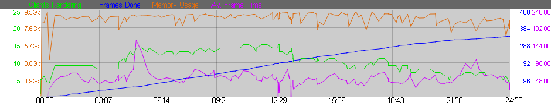

RRender displays Preview Frames on the job page in rrControl and at the rrWebsite.
You should check these Preview Frames after some time to see if there is any problem rendering the scene.
Rendering some preview frames does not take that much time, but loosing a whole render job because something was missed...
Also see Preview Render
If you see an error triangle in the job table, then you should check the error messages of the job.
See Troubleshooting/Error Analysis.
Sometimes it can help to take a look at the Statistics of a job.
The most important graph is the blue line.
It shows you the frames rendered over time.

See rrConfig/Approval.
rrControl and rrWebsite show you a framebar of the job:
The framebar shows the frames as bars.
The colors are:
White |
The frames are missing and not assigned to a client. |
Blue |
Assigned to a client for rendering (Sequence Divide) |
Green |
A started frame (placeholder file). If a client starts to render a frame, then the renderer or RR often creates a placeholder file. rrViewer will show you the client name that has started the frame. If a client is aborted, then it can be that placeholder files are left. The rrServer will delete these placeholder files in that case. |
Black |
Rendered/Finished Frames. |